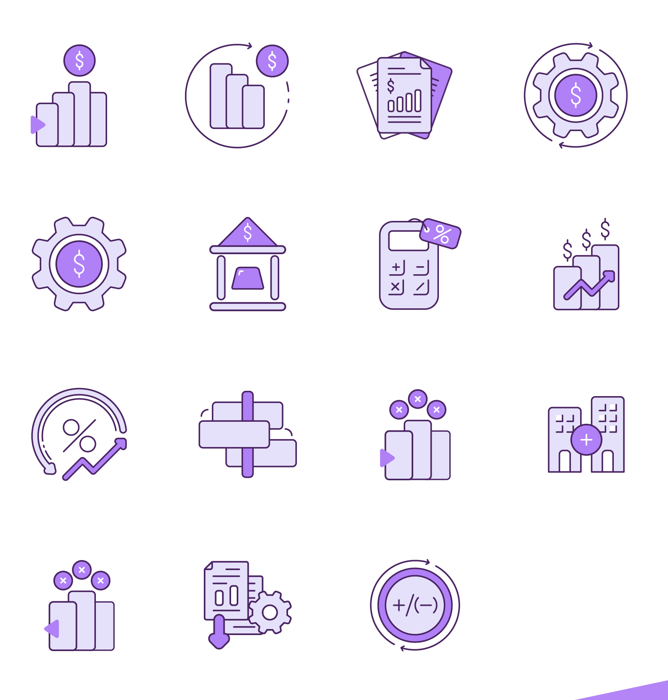
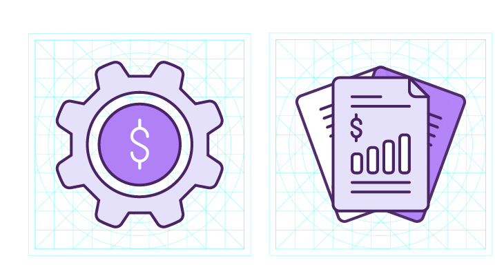
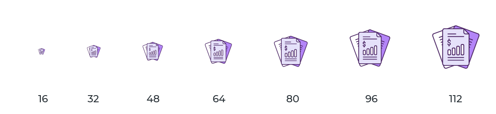
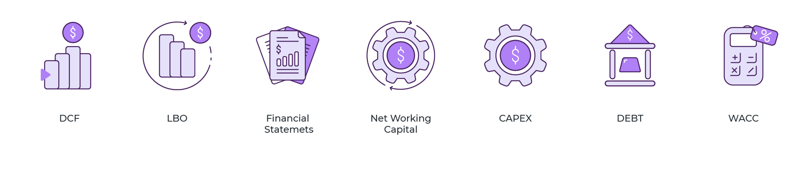
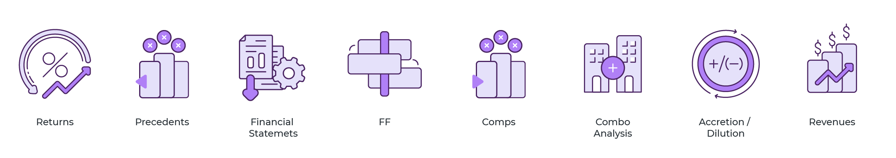
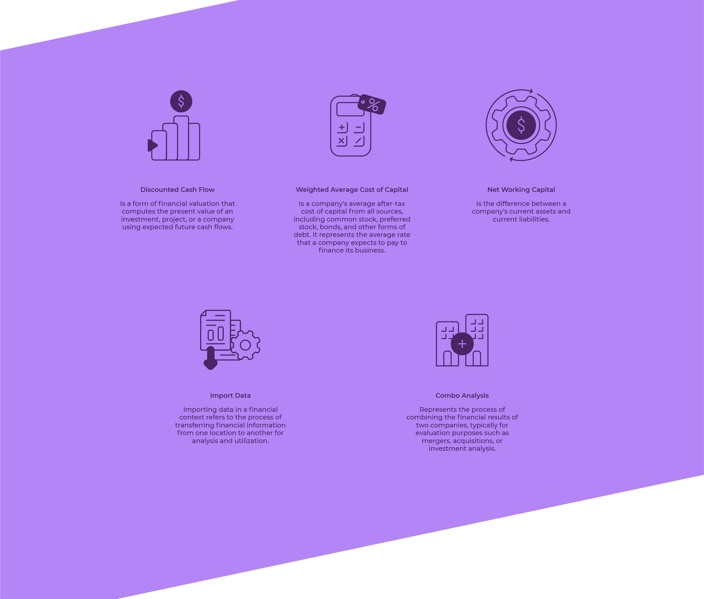

Nonighter
Fifteen icons for the desktop application of a financial reporting platform. The ones they had had become dated and inconsistent: they confused the user and no longer resembled the brand.

Financial reporting
With Lucía Domínguez · Al Sur Studio
Redesign of the app's set
From 16 to 112 px
The app was already the workplace of its users. What had fallen behind was its visual layer.
Nonighter is a platform for organizing financial reporting processes: from its desktop application, the user generates reports every day. The icons naming each operation had become old and inconsistent with each other, and that has two costs: doubt when navigating and a brand that doesn't recognize itself inside its own product.
The brief was the entire system, not a single piece: redesign the fifteen icons with one criterion. I worked on it with Lucía Domínguez.
Four rules agreed before drawing the first icon.
Update the set to the visual standard users expect today from a desktop app.
One graphic language across all fifteen, so navigating is faster and nothing has to be interpreted.
Nonighter's palette and drawing criteria, inside the product and not only on the web.
Clarity at any screen size and resolution, from the menu icon to the header one.

Two fill tones, one outline stroke and the violet reserved for the element that gives each icon meaning: the coin, the sign, the gear.

All icons are built on the same grid, with the same stroke weight and the same optical weight. It's what makes twenty of them together on a screen read as a set.

Each icon tested at seven sizes, from 16 to 112 px. What rules is the real size of use in the interface, not the one on the presentation sheet.



Renewing a set already in use has a constraint that isn't negotiable: learned recognition.
An ERP icon isn't there to decorate: it's the signal the user has already memorized and looks for without reading. You can change the entire drawing, but not the metaphor. Working from the inherited set, instead of starting from zero, was the decision that made it possible to modernize it at no learning cost.
Developed together with Lucía Domínguez — Al Sur Studio.